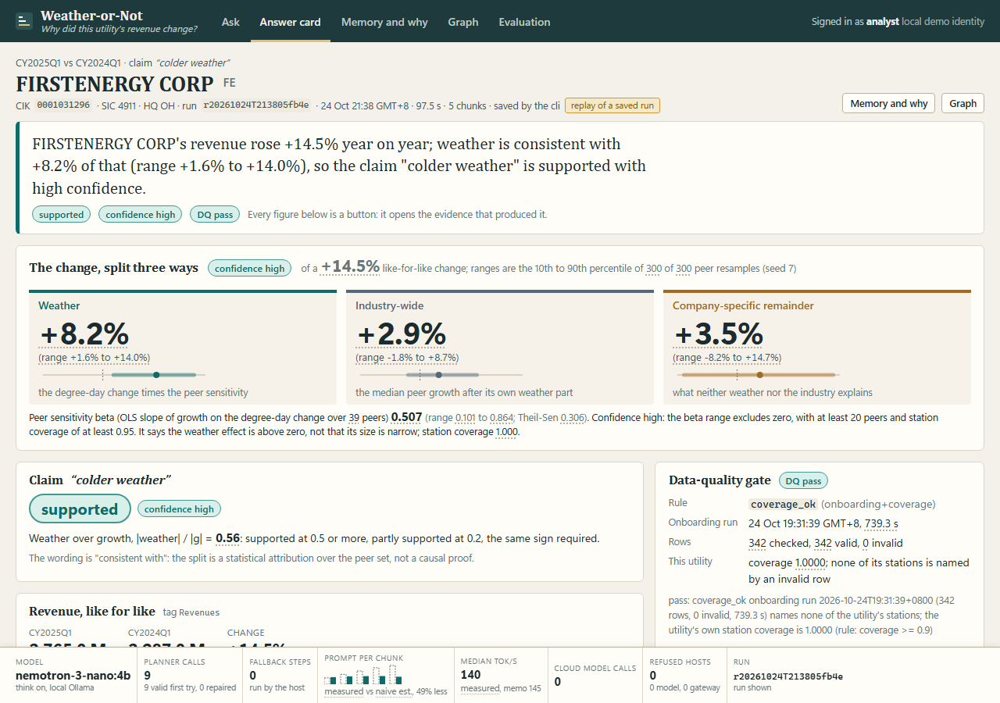
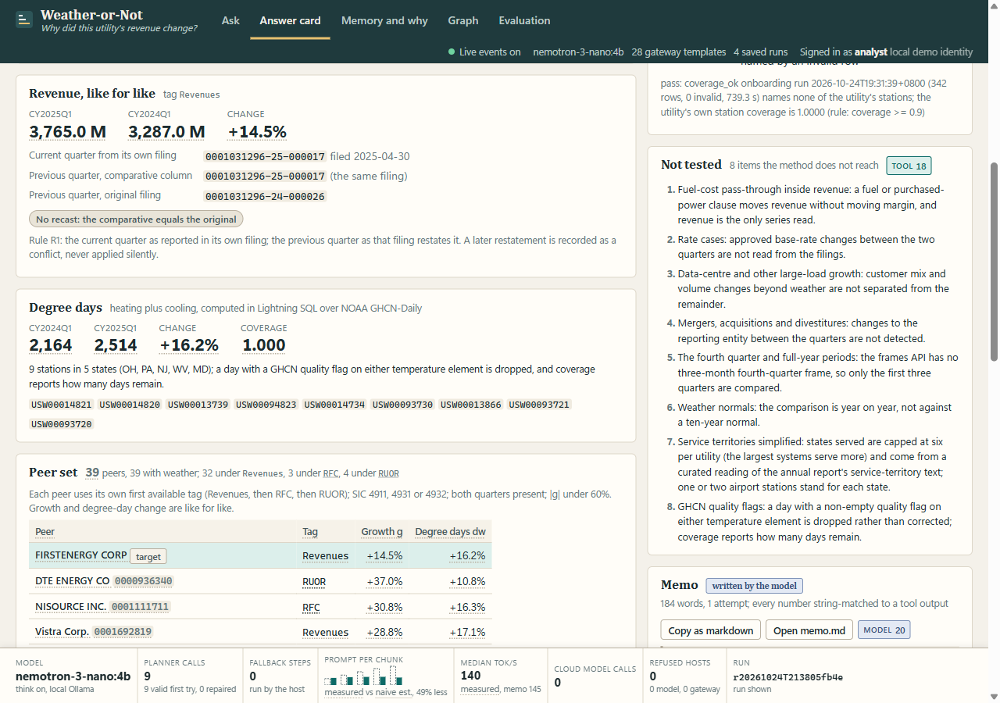
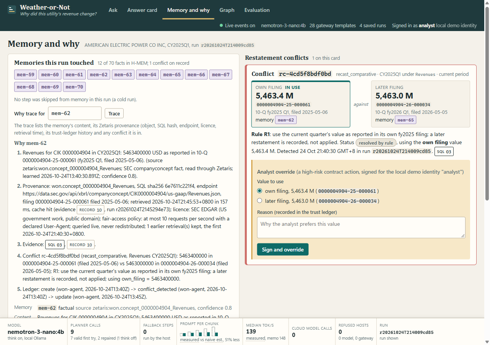
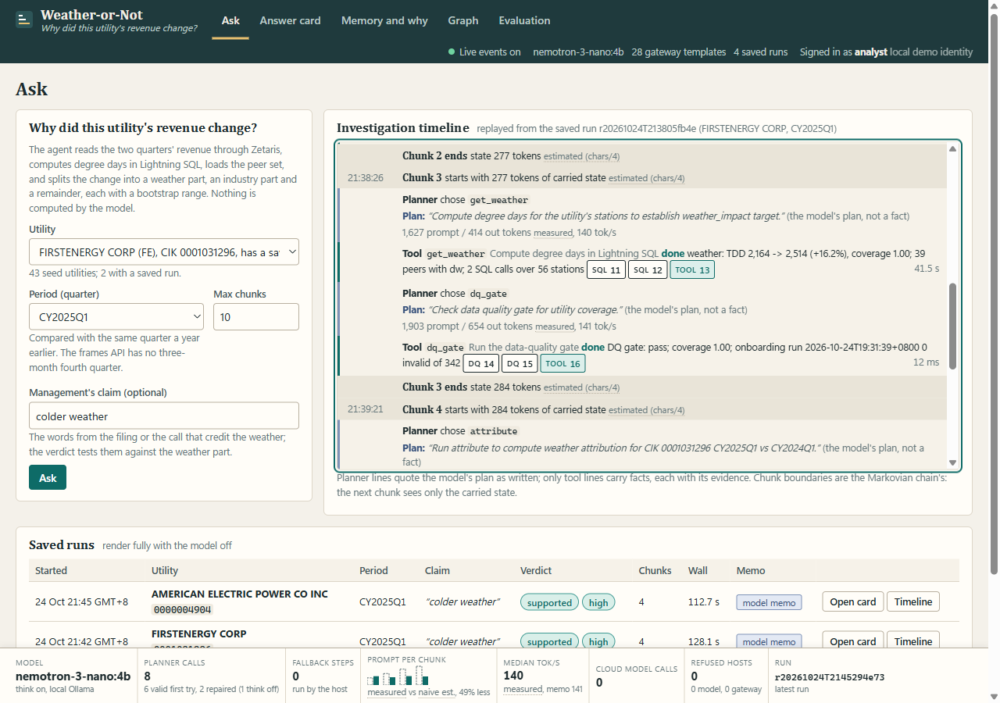
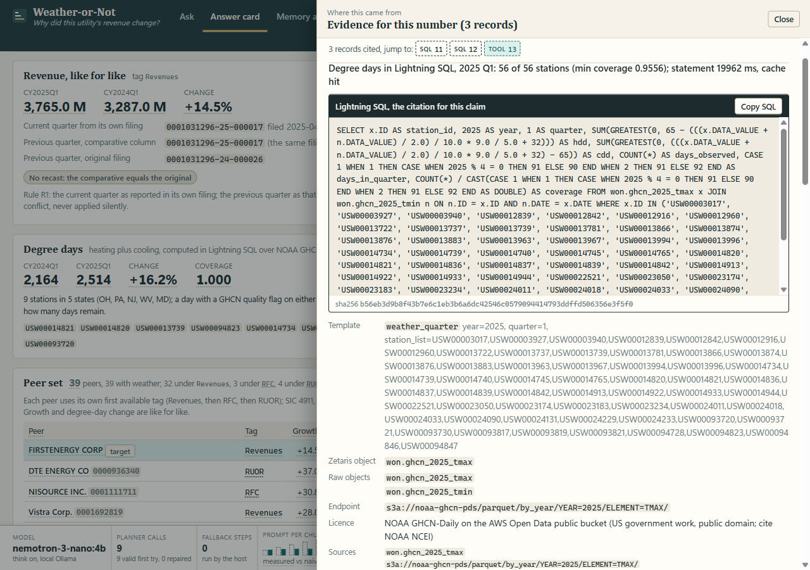
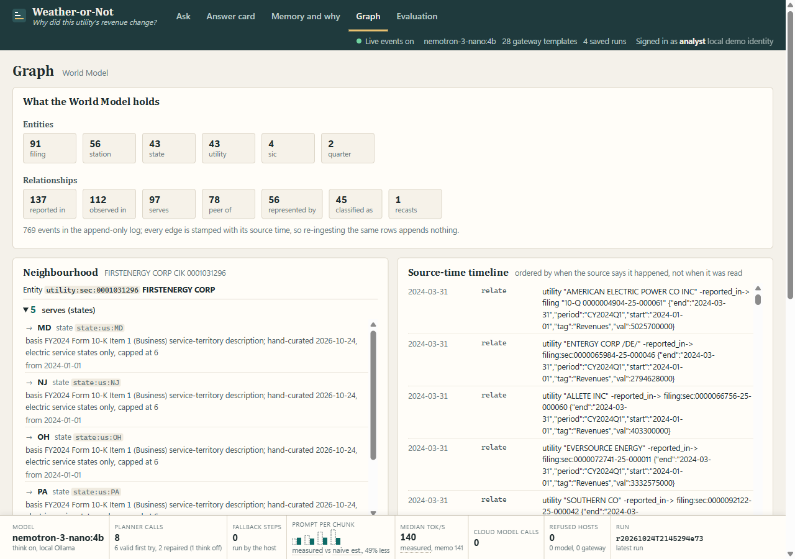
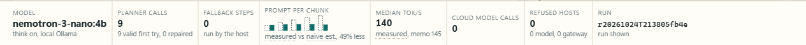

The utility says it was the weather. Weather-or-Not checks. It splits a US electric utility's year-on-year revenue change into weather, industry-wide and company-specific parts, each a range, with the Lightning SQL behind every number.
FirstEnergy, Q1 2025: the company says heating degree days +15%; the agent's 9 stations say +16.2%; weather is consistent with 8.2 of the 14.5 points of revenue growth.

A utility credit analyst in earnings season, a state commission staff analyst or consumer advocate preparing for a rate case, a reporter. Each gets a filing that credits the weather and has hours, not days, to test it.
FirstEnergy's Q1 2025 10-Q (accession 0001031296-25-000017) says heating degree days were "15% above the same period of 2024". Testing that by hand means degree days for dozens of stations, revenue for every peer, and the comparative column of each filing, which is recast between filings, so a naive year-on-year reads the wrong number.
Weather-or-Not answers in about two minutes with ranges, a claim verdict, a "Not tested" list, and the SQL behind every number.

The SEC frames API serves the most recently filed fact for a period. A quarter's value can be restated in a later 10-Q's comparative column, so the number a script reads today is not the number the company reported in its own quarter.
in use, rule R1
recorded as conflict rc-4cd5f8bdf0bd
Use the current quarter's value as reported in its own filing, and the previous quarter as that same filing restates it (like-for-like). A later restatement is recorded in H-MEM as a recast_comparative conflict with both values and both accession numbers, never applied silently. The analyst can override it with a signed high-risk contract; the override and its reason go into the trust ledger.
On AEP the restatement is 0.4 M on 5,463 M and moves nothing on the card; the rule matters when a restatement is material, as on the synthetic fixture (+12.2% like for like against +10.0% naive).
revenue_quarter table are comparatives, not first filings
of a +14.5% like-for-like change (3,765.0 M against 3,287.0 M); weather and industry ranges are the 10th to 90th percentile of 300 of 300 valid peer resamples (seed 7); the remainder range combines their bounds, so it is wider.
| Claim "colder weather" | supported ratio 0.56 |
| Confidence | high |
| Degree days, 9 stations in 5 states | 2,164 to 2,514, +16.2% |
| Peer sensitivity beta over 39 peers | 0.51 (range 0.10 to 0.86) |
| Theil-Sen cross-check | 0.31 |
| Peers by tag; excluded | 32 + 3 + 4; 3 |
| Station coverage; DQ gate | 1.00; pass |
| Memo by the model, numbers string-matched | 184 words, 1 attempt, 0 unknown |
| Not tested, listed on the card | 8 items |
Supported because the central estimate is over half the change (ratio 0.56). High: the beta range excludes zero with 39 peers and coverage 1.00, so the weather effect is above zero; it does not say 8.2 is precise.
The wording is "consistent with": a statistical attribution over the peer set, not a causal proof.

resolve_utility, probe_revenue_tag, register_frames, get_revenue, get_peers, get_weather, dq_gate, attribute, not_tested, finalize. Degree days run in Lightning SQL; growth, peers, rule R1 and the bootstrap attribution run in deterministic TypeScript.
utility_resolved, tag_chosen, revenue_like_for_like, peers_loaded, weather_target, weather_peers, dq_checked, attribution_done, claim_tested, not_tested_listed, memo_written. A warm run skips tag_chosen from memory: 4 chunks instead of 5. The planner's pick was the checklist's next step in 33 of 34 calls on the four clean runs and 34 of 36 on four other utilities; the exceptions are allowed reorderings that leave the card unchanged.
| Layer | What |
|---|---|
| Data platform | Zetaris Lightning 2.4.3.1, local Docker, JDBC localhost:10000; REST tables, Parquet filestore tables, SchemaStore views with CACHE, a USL with PK, FK and a custom DQ rule, LIST / RUN / SHOW DQ |
| Gateway | Python 3.12.0, FastAPI, JayDeBeApi over the Zetaris JDBC driver; 28 named templates, allowlist, registrar plans, execution-contract check; pytest 236 passed, 2 skipped |
| Agent | Node 22.13.1 + TypeScript 7.0.2 run with tsx 4.23.15, no runtime dependencies; vitest 5.0.3, 16 files, 203 tests; tsc --noEmit 0 errors |
| Reasoning engines | Meterless H-MEM, Markovian and World Model reference engines, vendored unchanged at upstream commit 1742dec5 (Apache-2.0); Scout Intent subset reimplemented in agent/src/contract and labelled partial |
| Model | NVIDIA Nemotron 3 Nano 4B (nemotron-3-nano:4b) through Ollama on 127.0.0.1:11434; temperature 0, seed 7, num_ctx 8192, JSON schema output; think on for the planner (output budget 3,072), off for the memo (1,024) |
| UI | Plain HTML, CSS and ES modules, no build step, served by the agent server; server-sent events for the live timeline; light and dark; keyboard-reachable evidence drawer |
| Sources | SEC EDGAR frames, companyconcept and submissions; NOAA GHCN-Daily parquet (by_year, TMAX and TMIN); company_dns V4 SIC list. Seeds: 43 utilities, 56 stations, curated from public filings and labelled as such |
| Development | Developed in Cursor. |
The model chooses a tool from a dynamic enum and writes prose. Every number comes from SQL or deterministic TypeScript, so the model's job is small enough for a local 4B model at about 140 tokens per second.
The agent is Node 22 standard library plus the vendored engines; the gateway is the only place with third-party packages. A fresh clone runs npm ci, npm test and the UI's empty state without Zetaris.
Only WON_* databases, the won container and the weatherornot namespace are touched; never DROP, GRANT or INVALIDATE CACHE from code; SEC calls at most 10 a second with a declared User-Agent.
WON_SEC (REST): 8 frames tables, 10 companyconcept tables, 43 submissions profiles; every count equals the source response (frames Revenues CY2025Q1: 1,937 = 1,937). WON_DNS: 1,005 SIC codes. WON_GHCN (Parquet on public S3): 4 partitions of 4.31 to 4.37 million rows each, station-filtered views cached at 264 to 269 KB.
One weather_quarter statement per quarter joins TMAX to TMIN over all 56 stations, drops days with a quality flag, and returns HDD, CDD, days observed and coverage in 18 to 24 s. Parity checked three ways on one station-quarter: 2022.69 HDD / 22.08 CDD from the tool's SQL, the template and the TypeScript reference.
weather_or_not_usl: 5 tables (sic_code 1,005 rows, utility 43, station 57, weather_quarter 342, revenue_quarter 133), 5 primary keys, 3 foreign keys, custom rule coverage_ok. RUN DQ: 342 of 342 station-quarters valid; the utility FK rule found 1 invalid row, MGE Energy under SIC 4900, which company_dns does not list: a real orphan found at onboarding; the peer filter excludes MGE by SIC code.
28 named templates behind an allowlist; a new frames period is registered at run time through the gateway's registrar under a signed contract (measured on an operator call: table, view, DESCRIBE, CACHE in 1.08 s; count 2,018 = source). Every card number opens the statement that produced it, with its sha256, object, endpoint, licence, retrieval time and cache state.
Frames cik joins the submissions profile only through LPAD (34, 35, 21, 23, 9 and 11 matches across the six tag-periods, equal to the integer IN counts; 0 without LPAD); frames loc equals the business-address state in every row; 56 of 56 stations carry the seed file's state.

Vendored reference, subclassed. Every fact carries Zetaris provenance (object, SQL sha256, endpoint, accession, filing date, licence, retrieval time, latency, cache state, evidence id); a reconfirmed fact refreshes it and keeps the history: 70 facts after two questions, 16 provenance entries, 0 placeholders. The AEP restatement is conflict rc-4cd5f8bdf0bd (mem-62 against mem-65, rule R1); why mem-62 prints the fact, provenance, evidence, conflict and ledger (create, conflict_detected, update).
Vendored reference generator. The carried state stayed at or below 284 tokens (estimated) against the 800 budget; measured first-call prompts stayed between 1,421 and 1,644 tokens per chunk while a full-history prompt (estimated, chars/4) would have grown to 3,742: 6,615 against 12,956 over the run, 48.9% less.
Vendored reference. 239 nodes (91 filings, 56 stations, 43 states, 43 utilities, 4 SIC codes, 2 quarters), 526 edges: serves valid from 2024-01-01 on the FY2024 10-K text, reported_in from the filing date, peer_of per period with g and dw, observed_in with HDD, CDD and coverage, one recasts edge. 769 events before and after the warm run: re-ingesting appends nothing.
Reimplemented from the spec. Registrar actions are medium risk; the analyst's override_recast is high risk. Contracts are HMAC-signed, expire after 15 minutes, and a replayed one is refused; the applied override recomputed growth with 5,463.0 M and the ledger records who, when and why.

| Planner mode | Wall, mean | Valid first try | Repaired | Fallback | Output tokens | Model memos | Peak GPU memory |
|---|---|---|---|---|---|---|---|
| Think on (shipped) | 103.2 s | 27 / 34 | 6 | 1 | 33,225 | 4 / 4 | 7,145 MiB |
| Think off | 72.5 s | 27 / 34 | 7 | 0 | 14,595 | 4 / 4 | 6,981 MiB |
| No model | 38.5 s | n/a | n/a | every step | 0 | template | 3,765 MiB |
Wall ranges 94.0 to 111.2 s, 69.0 to 75.3 s and 38.0 to 39.4 s. With no model the host runs every checklist step and writes the template memo. All 12 cards are identical to the published ones: the numbers never come from the model. Think off was faster and no less reliable here; the shipped setting stays think on (frozen for judging). GPU memory is the whole card (nvidia-smi), 3,745 MiB with no model loaded. The video's 96 tok/s was recorded under screen capture; 139 to 140 tok/s is from the clean runs without capture.
Four of the six invalid first replies were empty: the model spent the whole output budget thinking on the not_tested and finalize steps. The repair round with think off fixed each one in about 24 s, which is why a warm run is not faster in wall time although it skips a chunk. A verifier's two further live runs through the API saw 16 planner calls, 11 valid first try, 4 repaired and 1 deterministic fallback; the fallback produced the same card.
The tool it chose was the checklist's next step in 33 of 34 planner calls of the four clean runs (once the peers before the revenue, an allowed order); two wrong tag inputs were caught by the host's schema check. Temperature 0 and seed 7: the FirstEnergy card is identical across its five runs (beta 0.5065, weather +8.20%) and two warm-run memos matched byte for byte.

The comparative column is recast between filings; rule R1 reads each quarter from its own filing and records a restatement as a conflict, never a silent overwrite.
Each filer under its first available revenue tag (32 + 3 + 4 peers); every exclusion named with its reason on the card.
Computed where the parquet is cached, over the whole station union in one statement per quarter; coverage reported per station.
coverage_ok (onboarding) and the question's coverage can withhold a verdict; the SIC orphan, MGE, is a real finding.
H-MEM provenance and conflicts, World Model validity dates, Markovian chunks; the model plans and writes but never computes a number.
| Measured on 24 Oct 2026 | Result |
|---|---|
| Card claims with evidence (E-cov), nine runs | 171 / 171 |
| Evidence records with every field (E-complete); 20 / 20 in every run since the provenance refresh | 158 / 180 |
| Memo drafts with a number that is not a tool output | 0 of 12 |
| Cards identical across runs: FirstEnergy; American Electric Power | 5 of 5; 4 of 4 |
| Bootstrap resamples valid, seed 7; degree-day parity of SQL against the TypeScript reference | 300 / 300; equal to 0.01 |
| DQ coverage_ok (total / valid / invalid); utility SIC foreign key | 342 / 342 / 0; 43 / 42 / 1 |
| Join map: LPAD join counts equal the integer IN counts; the no-LPAD control | 6 of 6; 0 |
| Cloud model calls and refused hosts across every run | 0; 0 |
| Agent tests (16 files); gateway tests | 203 / 203; 236 passed, 2 skipped |
E-complete's 22 misses: placeholder object names in the two earliest runs, fixed since; reported, not hidden.
| Utility | Revenue | Weather (range) | Remainder | Verdict (ratio) |
|---|---|---|---|---|
| Hawaiian Electric | -6.1% | +12.9% (+5.3 to +20.3) | -20.8% | not supported |
| DTE Energy | +37.0% | +5.9% (+1.4 to +9.8) | +28.9% | not supported (0.16) |
| Southern Co | +17.0% | +6.6% (+0.9 to +11.3) | +7.6% | partly supported (0.39) |
| Entergy | +1.9% | +10.2% (+2.1 to +16.7) | -11.3% | supported (5.46) |
Four of the 41; claim "the weather" (filings not read by hand). Hawaiian Electric's 2025 10-Q restates Q1 2024 11.7% lower: naive -17.1%, rule R1 -6.1%. Entergy: overshoot note. Confidence high on 40 of 41.
Fuel-cost pass-through, rate cases, data-centre load growth and mergers are not read from the filings; they stay in the "Not tested" list with the fourth quarter, weather normals and the simplified service territories.
The two degree-day statements take 18 to 24 s each; the USL's governed copies answer in seconds (revenue) to minutes (weather), so the gate reads an onboarding DQ file and the card states its time. The verdict uses the central estimate; on the demo case the weather range runs from a small part of the change to nearly all of it.
The analyst is a local demo identity; Zetaris reads run on the admin login behind the read-only allowlist.
Ten-year normals from the same GHCN partitions, and the fourth quarter from full-year facts minus three quarters.
Rate-case and fuel-clause facts from the filings, so the remainder is explained instead of listed as not tested.
A reader-only Zetaris login, and the USL weather table materialised once so RUN DQ can run per question.